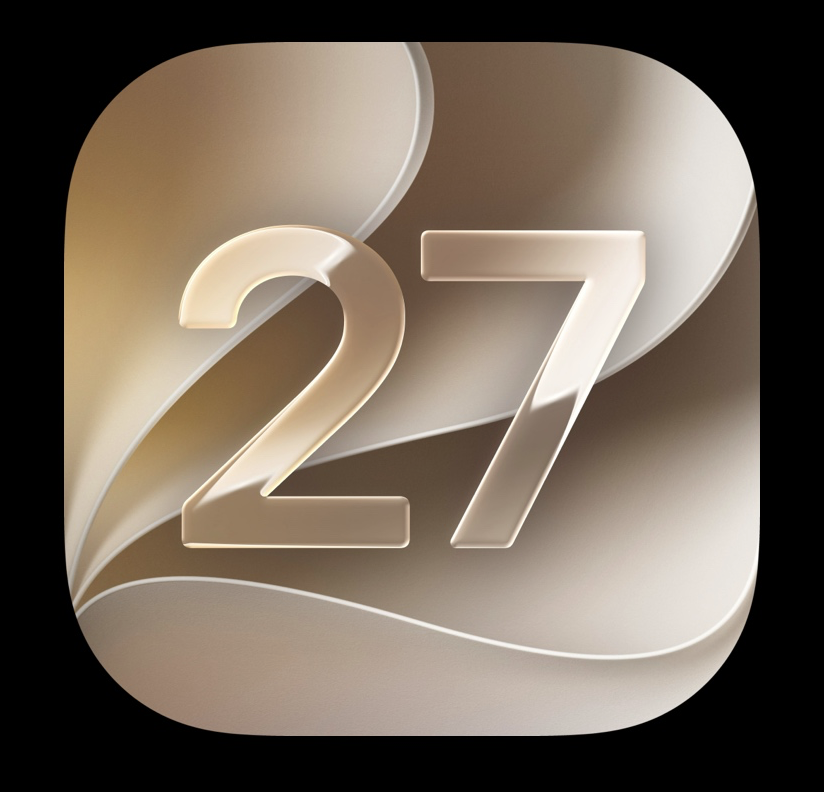

12 June 2026
Preparing INR Mate for iOS 27
We are temporarily pausing new feature development while we focus on iOS 27 integration and the next generation of iOS 27 features.
news & updates
Release notes, INR Mate progress and practical notes from a tiny app studio building tools for real-life routines.

12 June 2026
We are temporarily pausing new feature development while we focus on iOS 27 integration and the next generation of iOS 27 features.

12 June 2026
INR Mate v1.2 is now live, adding Siri and Shortcuts support to make everyday INR and warfarin logging even quicker.

The first major update since launch focused on clearer everyday use, appointment-ready exports and smoother device syncing.
21 May 2026
INR Mate began as a personal project and has grown into an iPhone, iPad and Apple Watch app for clearer INR and warfarin records.